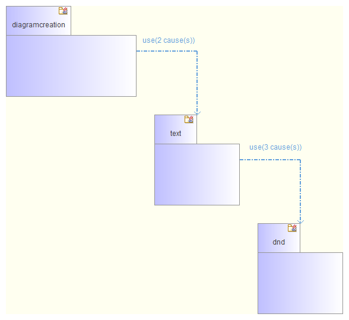

Sub-package diagrams¶
The aim of this automatic diagram is to show the internal structure of a package, in other words the content of this package, along with the links that exist between its sub-packages. It is often these links which establish the package’s encapsulation function.
Applicable elements¶
Sub-package diagrams can be created on any Package.
Contents¶
- Package P itself is not visible. It is the context of the diagram.
- P’s sub-packages are viewed in structured mode.
- Blue links (NameSpaceUse) between P’s sub-packages are viewed.
Layout¶
- Sub-packages are laid out diagonally.
- Elements are sorted by the number of links, with those which have the most outgoing links presented on the top left.
- Outgoing links are on the side of elements, while incoming links are either above or below.
Note: All elements present in this diagram have a specific associated style.
Example¶
